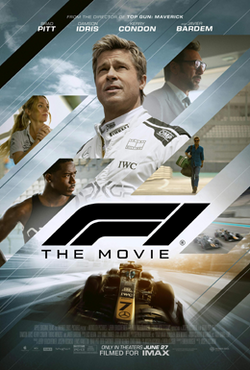

In The F1 Movie starring Brad Pitt, Brad Pitt plays the role as a broken-down former racer that teams up with a struggling F1 team to chase a shot at redemption and a shot at glory. As the stakes rise on and off the track, the partnership gets tested by competition, risk, and the pressure of winning. The story leads towards a high-speed, high-pressure race sequences that turn personal determination into a fight for the future of the team.
I like the F1 movie because of its story and how it stays focused on growth instead of just racing. I really enjoyed the trial-and-error process the main character goes through with his teammate—and also with himself—learning what works and what doesn't under pressure. Seeing how they keep adjusting and pushing through setbacks made the movie feel both intense and relatable. This content was created with the help of A.I.